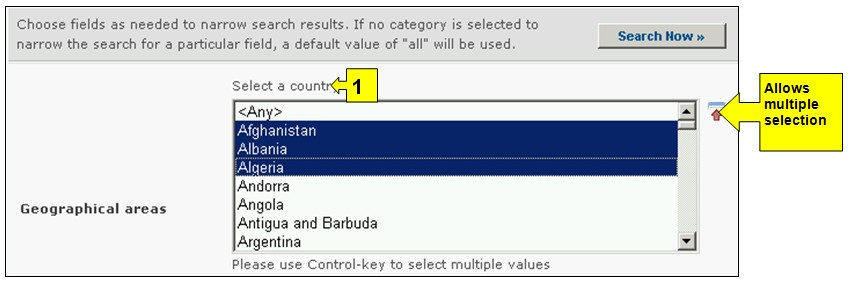

URL: http://bch.cbd.int/database/laws/
Under the Cartagena Protocol, Parties are responsible for making available through the BCH information about their relevant laws and regulations.
The search interface for information about Laws and Regulations can be accessed from the link in the Finding Information drop down menu on the navigation bar, or from the link in the left hand menu on the Finding Information page or from the link in the Laws and Regulations text on the same page.

Figure 17
This database enables users to search for:
-
National Laws;
-
National Regulations;
-
National Guidelines;
-
Bilateral Agreements;
-
Multilateral Agreements; and
-
Regional Agreements.
On the Search for Laws and Regulations page there are six search criteria boxes provided for refining searches in this database. Each of them has a drop down menu from which it is possible to select the required criteria. The default setting for each drop down menu is the first item at the top of the menu list. On the right side of each box, a button allows the user to activate multiple selections. Once in the multiple selection mode it is possible to add more criteria to the selection by clicking on the relevant criteria while pressing the Ctrl (Control) key.
Figure 18
Box 1 [Select a country] lists all the country names in a drop down menu, so that users can select one or more specific countries for a search.

Figure 19
Box 2 [Select country group] lists country groups in a drop down menu so that users can select one or more specific groups of countries for a search. The country group list contains all major geographical or political groupings of countries and allows for narrowing the search to records submitted only by the members of the selected group or groups.

Figure 20
Box 3 [Type of Laws or regulations] lists all categories of laws and regulations, available in the database and allows the user to narrow the search to (i) National Laws, Regulations & Guidelines or (ii) Bilateral, Regional & Multilateral Agreements.

Figure 21
Box 4 [Subject area] lists the subjects of laws and regulations related to the implementation of the Protocol. This list allows the user to narrow the search to one or more subject areas.

Figure 22
Box 5 [Date of record] allows the user to narrow the search according to the date records have been registered in the BCH. The drop down menu provides a number of options for limiting the search to only those records submitted within the selected interval of timeframe (e.g. ‘last day’, ‘last month’, ‘last year’, etc.).

Figure 23
Box 6 [Keyword search] provides an opportunity for using keywords to narrow the search. The user can use standard keyword syntax (combination of AND / OR operators) to search with multiple words or core parts of words (e.g. “Import OR Export”). A search that is made by using keywords only produces results of records containing exactly the searched text and not possible synonyms that have not been inserted (i.e. a search with the single keyword “Maize” will produce a list of records containing the word “Maize” but not the words “Corn” or “Zea mays”).

Figure 24
The search page offers three buttons to produce a record list. The Search Now button (both at the top and bottom of the search interface) allows the user to activate a search based on the search criteria selected in the search facility boxes. The search results are sorted alphabetically by default according to country name. The Browse all records (at the bottom of the search interface) allows the user to obtain a list of all records in this database.

Figure 25
The Search Results pages have a sorting facility above the list of records. This can be used to sort the records according to criteria specific for that category of information Note that the sorting criteria change when the user selects different search criteria.

Figure 26
Example: A user wishes to identify national laws and regulations in the Oceania region. Select Asia-Pacific-Oceania in the Select country group box. Select National laws, regulations & guidelines in the Type of Laws or regulations box. Activate The search results are displayed and the user can select any record to study the documentation from specific countries in the region.

Figure 27

Figure 28